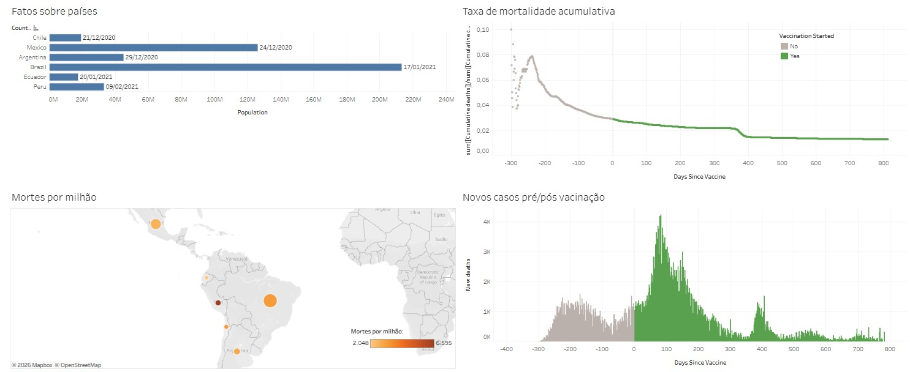

Da operação aos dados: transformo dados brutos em conhecimento estratégico através de análises exploratórias, visualizações e modelos preditivos. Utilizo Python, SQL e Machine Learning para descobrir padrões, gerar insights e solucionar problemas reais de negócios.
Minhas ferramentas de trabalho e visão de negócio para análise de dados
Manipulação de dados estruturados e consultas otimizadas.
Tratamento, EDA, dashboards interativos e modelos preditivos.
Habilidades interpessoais cruciais para alavancar os dados.
Projetos de dados que transformam informações em conhecimento estratégico.

Análise de dados da COVID-19 com Python, explorando casos, óbitos e vacinação para identificar padrões, tendências e gerar insights através de visualizações e análise estatística.
Estou disponível para vagas de Ciência de Dados, Análise de Dados e projetos colaborativos.